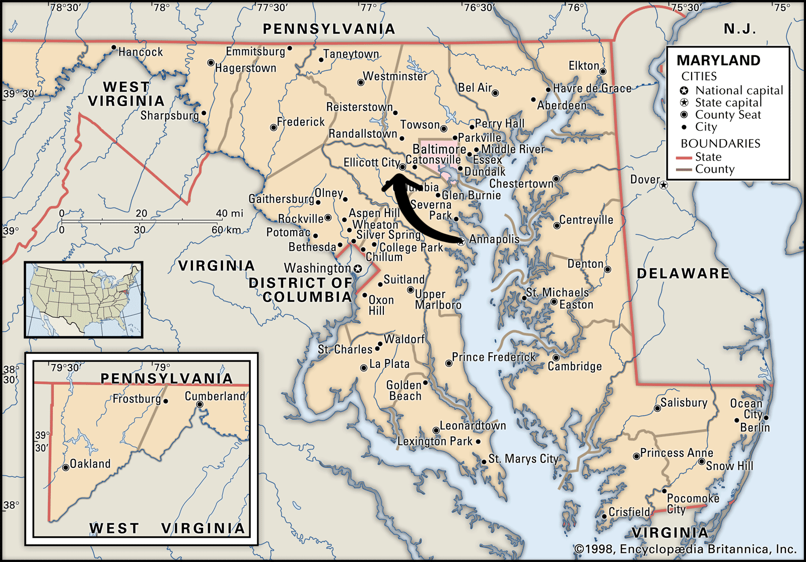
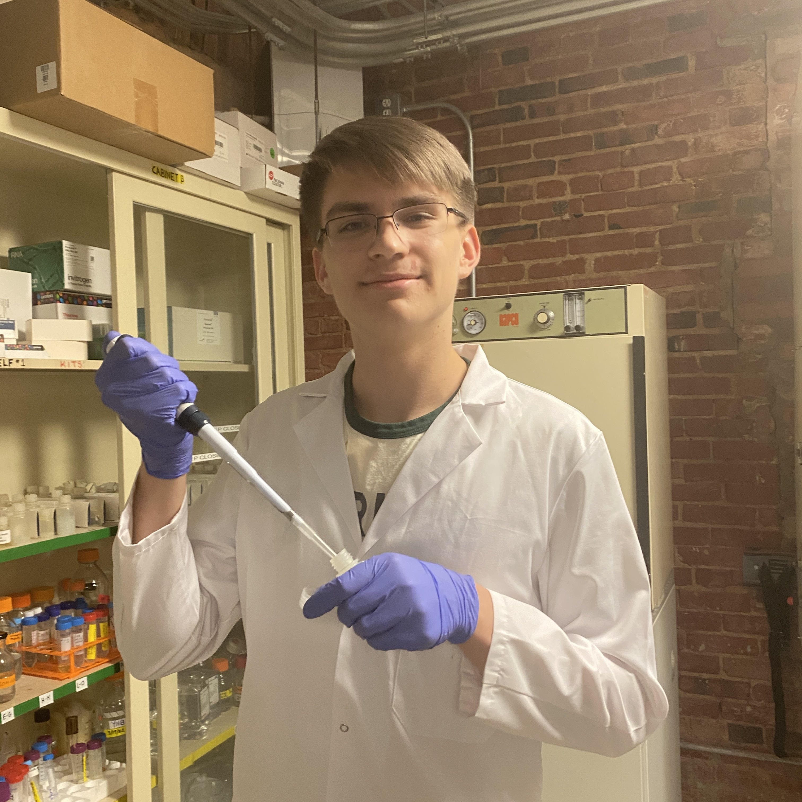

I was born in Annapolis, Maryland, though I moved to Ellicott City when I was 7.
I went to Centennial High School, but as of last August, I go to Cornell University!
I am currently studying Biological Sciences in CALS, and I plan to concentrate in Plant Science.
I'm having a great time in college, and I can't wait to experience the rest of it!
In my free time, I love playing the violin! I started playing when I was 5 because I heard the Baltimore Symphony Orchestra on the radio in my grandmother's car and wanted to make beautiful music like them.
My other hobbies include:

I got most of my experience at the Baltimore Underground Science Space (BUGSS). I am very grateful to have had that opportunity!
I competed on BUGSS's iGEM team for 5 years, mainly focusing on aquatic bioremediation due to our proximity to the polluted Baltimore Inner Harbor. Over the years, we won one bronze, two silver, and two gold medals, and we were nominated for special awards twice!
While it was a great experience, we didn't have access to that many resources or supports, so I am very excited to see what can be done at the collegiate level!
I also got some of my experience from internships. I worked at the USDA's Agricultural Research center for one summer, but more recently, I am working with the Buckler Lab here at Cornell.